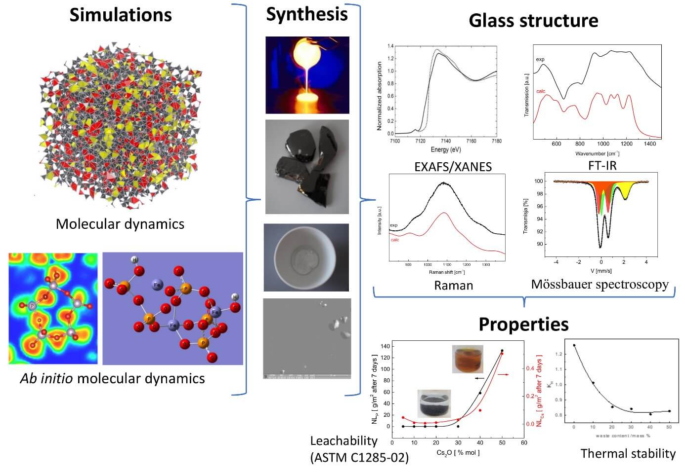
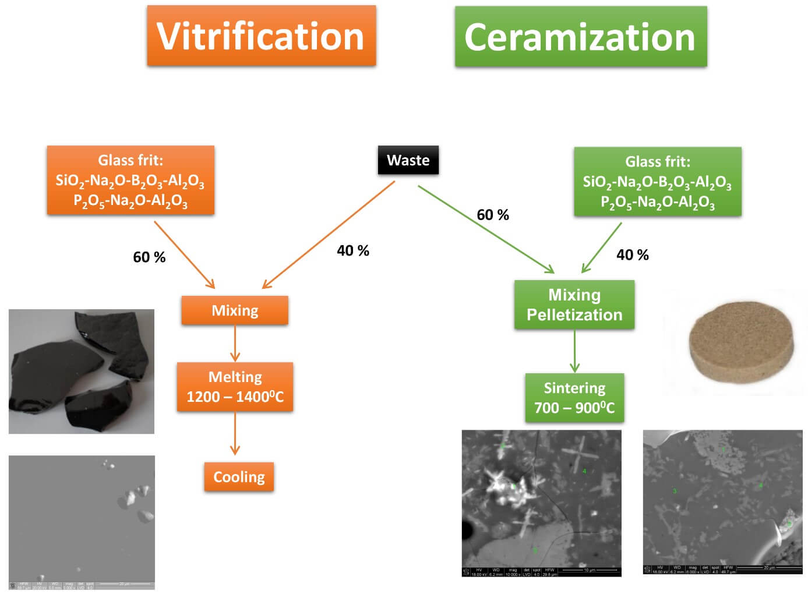
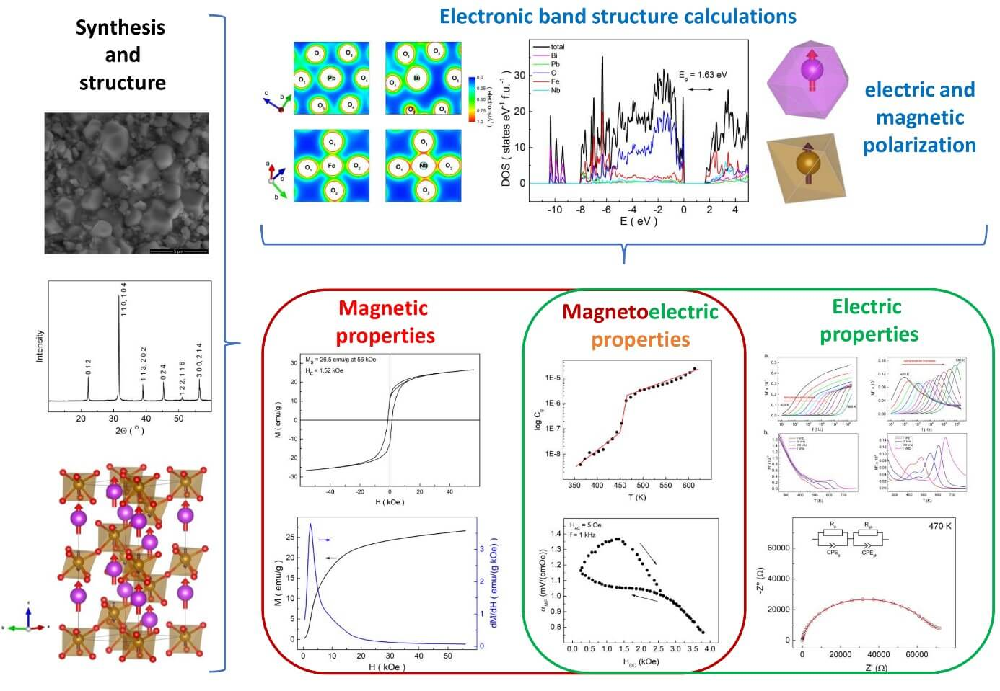

Glasses and glass-ceramic materials for waste immobilization
Glasses play a special role in the immobilization of dangerous waste like toxic, nuclear, etc. The most frequently used method of its immobilization is melting with specially prepared glass frit. Due to the process, the waste constituents become a part of the glass network or are encapsulated by the melt. Thus, the final product is chemically and physically stable and is resistant to the influence of different environmental conditions. In this form, waste can be stored in a very long time.
In our research team, we are designing a chemical composition of the glasses which can be used in the waste vitrification technology. The composition depends on the chemical composition of the waste and should be very carefully selected to fulfil the most rigorous standards of environmental protection. In the designing process, we use a multiscale approach in which the proposed glasses are at the first subject of computer simulations using different levels of theory. From the most precise ab initio molecular dynamics where quantum chemical interactions are taken into account in predicting the influence of waste elements on the glass network. Due to, the high computational costs the method can be effectively used for not very big systems. In the case of multi-component, big systems we use classical molecular dynamics to predict some properties of the final product, as well as the glass water and radiation resistivity. Thus, we can specify some selected number of different useful glass compositions which are studied experimentally. In our works we focus on structural (XRF, XRD, Raman, FT-IR, NMR, Mössbauer spectroscopy), thermal (TG, DTA/DSC), physical (density, leaching test) properties.
We are focused on two different types of glasses which can be used in immobilization of waste which is borosilicate and phosphate. The borosilicate glasses are materials of the first choice in the waste vitrification. This is due to the low costs of the glassy matrix and well known technological process. In our studies we propose, an alternative to the glass-waste melting process, the sintering of the glass frit with the waste. In the effect, glass-ceramic material is obtained which has very good properties and is characterized by a high waste loading parameter. The sintering is conducted at a lower temperature which reduces the costs and evaporation of volatile components. This reduces secondary waste streams.
Unfortunately, not all kinds of waste can be treated in borosilicate. There is waste that may contain elements which are not soluble in the glass. Such waste contains e.g. sulfates, chlorides, different metals, etc. The waste is often called “difficult” or “problematic”. In their immobilization phosphate glasses are being considered. The phosphate glasses are known to be widely used as biomaterials, in optoelectronics, as sealants. Their possible applications are limited due to low water resistance. Therefore, they haven’t been considered in the waste immobilization for many years. Their chemical durability can be controlled by substitutions of aluminum or iron. Thus, the material of different leaching results may be obtained. From easily hydrated in a water environment, up to material of superior water durability which may be used as a matrix in waste immobilization.
Multiferroics, magnetoelectrics and electroceramics
Magnetoelectrics are materials that exhibit magnetic and electric orderings in the same phase. They are interesting from the application and fundamental point of view due to the fact of joining two orderings which tend to exclude each other. Electrical ordering needs the broken spatial inverse symmetry while the time-reversal symmetry can be invariant. It means that a spontaneous polarization would not appear unless a structural distortion of the high-symmetry phase brakes the inversion symmetry. Contrary magnetic ordering needs the broken time-reversal symmetry whereas spatial-inverse symmetry can be invariant. This restriction results in the fact that multiferroics are rare in nature. Additionally, all conventional ferroelectric perovskite oxides contain transition metal with an empty d-shell. Magnetism, in contrast, requires transition metals with partially filled a d-shell. The difference in the filling of the d-shells makes these two ordered states mutually exclusive. One of the possibility to overcome those problems is to synthesize materials which have two different sublattices like in BiFeO3 which belongs to perovskite (ABO3) oxides. The A-sites (Bi3+) favor the stability of the ferroelectric distorted structure and the sublattice is responsible for electric polarization. At the same time, the B-sites contains magnetic (Fe3+) ions which provide magnetism. Thus, ferroelectricity is induced by the ions at the A-sites and the B-sites ions induce magnetic order. In this way, the above exclusion rule of ferroelectricity and magnetism can be obeyed. The simultaneous existence of magnetic and electric orderings leads to the so-called magnetoelectric effect. The effect is an observation of spontaneous electric polarization of the material due to the external magnetic field or vice versa. Thus, it can be used in many electronic devices like transformers containing only one coil, energy harvesters which harvest energy from magnetic noises or lossless reading heads, and many more. The problem is that coupling between magnetic and electric subsystem is frequently weak what reduce potential applications of the materials. Additionally, it is very often realized in temperatures below the room. In the group, we are synthesizing single-phase magnetoelectric perovskite-like solid solutions which are characterized by the coupling above room temperature. The developed method of synthesis gives the possibility to obtain pure single-phase materials without secondary impurity phases. The crystal structure of the materials is characterized using precise XRD measurements and SEM+EDS analysis. The crystal structure parameters we use to calculate electronic bandstructure properties using ab initio calculations. In the next step, we characterize the electric, magnetic, and magnetoelectric properties of the obtained materials.
AGH University of Science and Technology in Kraków,
Faculty of Materials Science and Ceramics
01.10.2005 - today
Main scientific activities:
- Synthesis and characterization of glasses and glass-ceramic materials for waste immobilization
- Simulations of a glass network structure using classical and ab initio methods
- Synthesis and characterization of multiferroic materials
- Electronic band structure calculations
- Structural properties of refractory materials
AGH University of Science and Technology in Kraków,
Faculty of Physics and Applied Computer Science
15.07.2004 – 01.10.2005
Main scientific activities:
- Synthesis of rear earth-transition metal intermetallic compounds
- Hyperfine interactions and magnetic properties
- Electronic band structure calculations
National Centre for Nuclear Research,
Department of Nuclear Methods of Solid State Physics
04.01.2005 – 30.09.2012
Main scientific activities:
- Head of Mössbauer Spectroscopy Laboratory
- Research of hyperfine interactions and magnetic properties
DSc, doctor of science in Materials Science, AGH University of Science and Technology, Faculty of Materials Science and Ceramics. Habilitation “Glassy Materials for nuclear waste immobilization” - 2016
Ph.D., degree in Physics, AGH University of Science and Technology, Faculty of Physics and Applied Computer Science. Thesis “Hyperfine interactions in intermetallic compounds 4f-5d-3 with substitutions transition metal 3d/transition metal 3d/alumina” - 2004
M.Sc., degree in Technical Physics, AGH University of Science and Technology, Faculty of Physics and Applied Computer Science. Thesis “Mössbauer Effect substituted intermetallic compounds 4f-3d” -2000